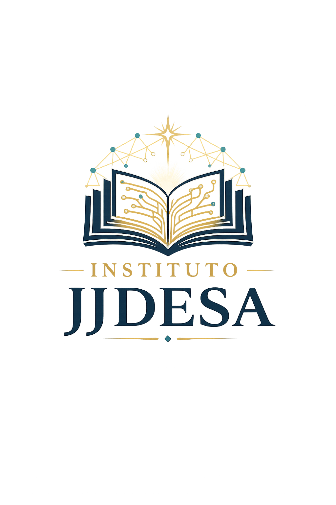
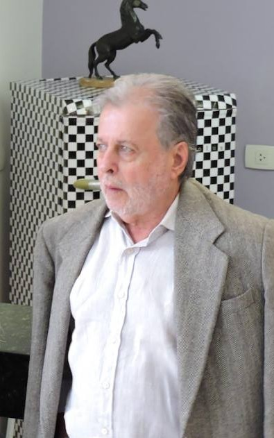
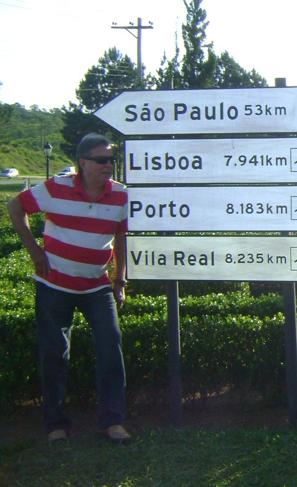

Conhecimento
Aprendizagem contínua, pensamento crítico e troca de experiências.

INSTITUTOJJdesaO Instituto JJdesa nasce com a proposta de aproximar inovação, formação humana e reflexão teológica — valorizando o saber, a ética e o desenvolvimento das pessoas.
O Instituto JJdesa propõe um espaço de diálogo entre o pensamento tecnológico e a dimensão humana e espiritual. Acreditamos que aprender é ampliar horizontes: desenvolver competências, cultivar responsabilidade e colocar o conhecimento a serviço da sociedade.
Com inspiração na trajetória educacional do professor João José Dias de Sá Gonçalves, o Instituto deseja manter viva a valorização do ensino, da curiosidade e da formação integral.
Aprendizagem contínua, pensamento crítico e troca de experiências.
Respeito, responsabilidade e compromisso com o bem comum.
Tecnologia como ferramenta para criar oportunidades e soluções.
Uma visão integrada da educação, que conecta as ferramentas do nosso tempo à reflexão sobre o ser humano e seu papel no mundo.
Cultura digital, pensamento computacional, inteligência artificial e novas ferramentas para aprender, criar e resolver problemas.
Estudo, diálogo e reflexão sobre fé, espiritualidade, valores, história e as grandes questões da existência humana.
Compartilhamento de saberes, formação cidadã, desenvolvimento humano e incentivo à curiosidade ao longo da vida.

EDUCAÇÃO E TRAJETÓRIAO Instituto JJdesa presta homenagem ao professor João José Dias de Sá Gonçalves e à importância de sua presença na história educacional que inspira este projeto.
Mais do que transmitir conteúdos, educar é despertar perguntas, estimular autonomia e ajudar cada pessoa a descobrir novas possibilidades.
“O conhecimento ganha sentido quando ilumina caminhos e contribui para a vida.”Mensagem institucional do Instituto JJdesa

Aprender também é explorar, conhecer culturas, observar o mundo e manter a mente aberta a novas ideias. Esta imagem integra o acervo fotográfico enviado para a criação do site.
Entre em contato para conhecer melhor a proposta do Instituto JJdesa, compartilhar ideias ou conversar sobre iniciativas em educação, tecnologia e teologia.